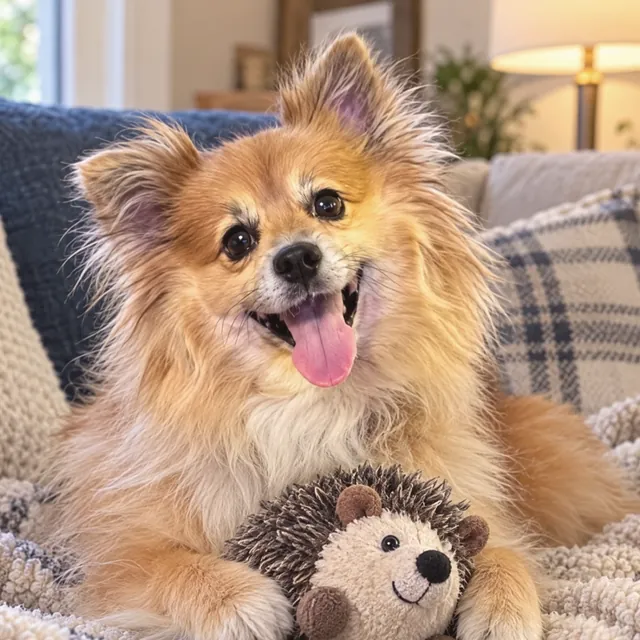
TazThe kind heart
Taz always notices how his friends are feeling, and he helps everyone take a slow, deep breath. Breathe with Taz!
Not long ago, five tiny Pomeranian puppies were found together, scared and all alone. Kind rescuers scooped them up and promised they would be safe. This is the true story of how those five little pups grew up as brothers and sisters, learned to feel, explore and grow, and found their way to a soft, hand-stitched world called the Pomverse.
Before they were stars of the show, Taz, Wookie, Skye, Ninja and Zivi were five tiny puppies with nowhere to go. Kind rescuers at Hope For Paws scooped them up, all five together, so no one was left behind. Much Love Animal Adoption Center found them a cozy foster home.
In foster care the five pups did everything together. Ninja sniffed out every new corner. Zivi led the morning stretches. Wookie found every lost toy, Taz noticed whenever someone felt sad, and Skye sang everybody to sleep.
Taz, the kind heart. Wookie, the little thinker. Skye, the dreamer. Ninja, the explorer. Zivi, the mover.
A hot-air balloon knitted from rainbow yarn floated the pups up through cotton-wool clouds to the Pomverse: 19 cozy places to explore, from Cuddle Hill to Bubble Cove. Today every Pom Tales episode is a gentle little song where children breathe, wiggle, count and rest along with the pups.
After every adventure the balloon floats back down to the five friends who adopted the pups, one pup each. Because the friends stayed close, the pups still grow up side by side. Rescued together, loved forever.

Taz always notices how his friends are feeling, and he helps everyone take a slow, deep breath. Breathe with Taz!
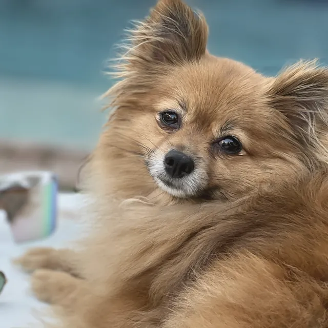
The smallest pup, and the cleverest at finding toys, puzzles and hidden snacks. Count with Wookie!
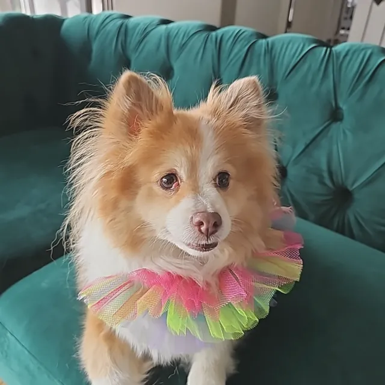
Gentle and soft-spoken, Skye loves bedtime stories, starry skies and cuddles. Dream with Skye!
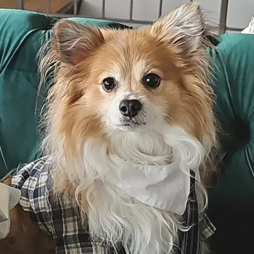
First to sniff out every new place, and always ready for an adventure. Jump with Ninja!
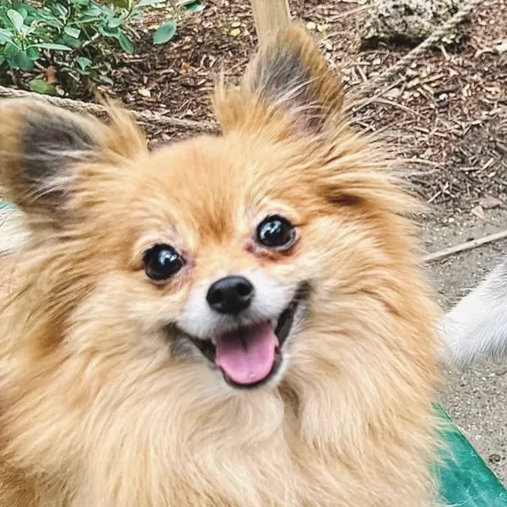
Zivi loves playtime, wiggles and big stretches, and makes moving feel like a party. Stretch with Zivi!
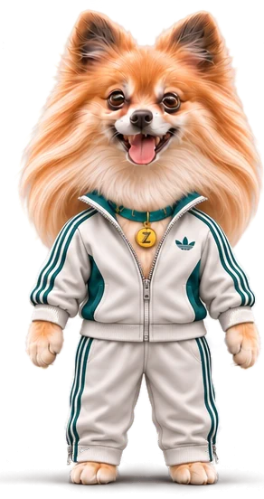
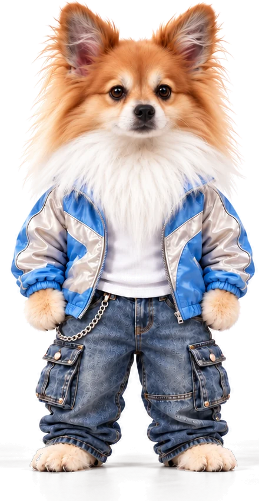
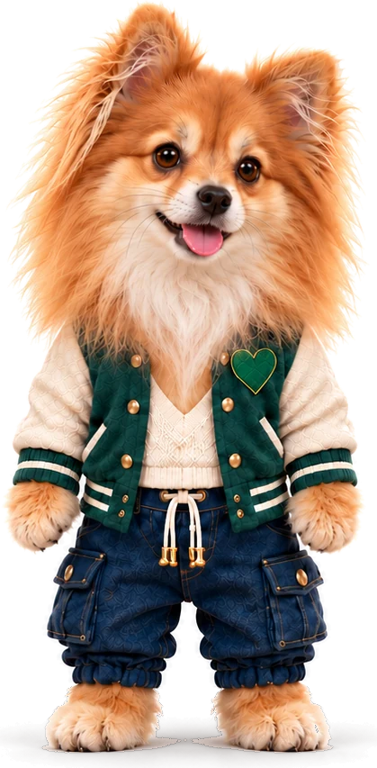
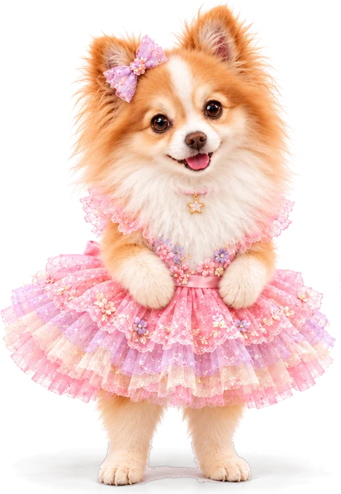
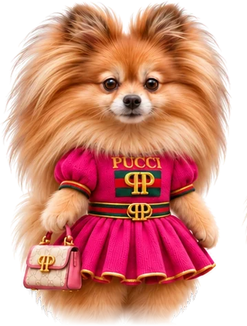
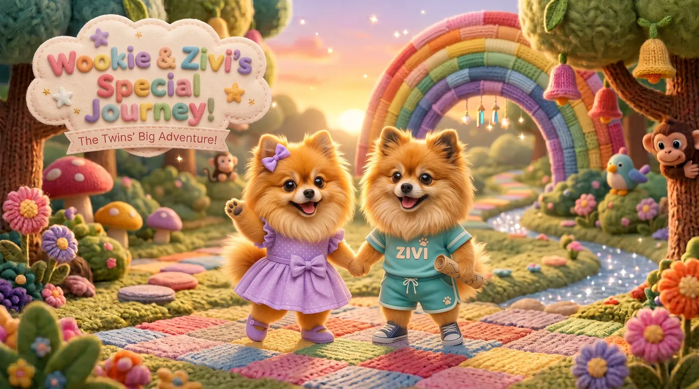
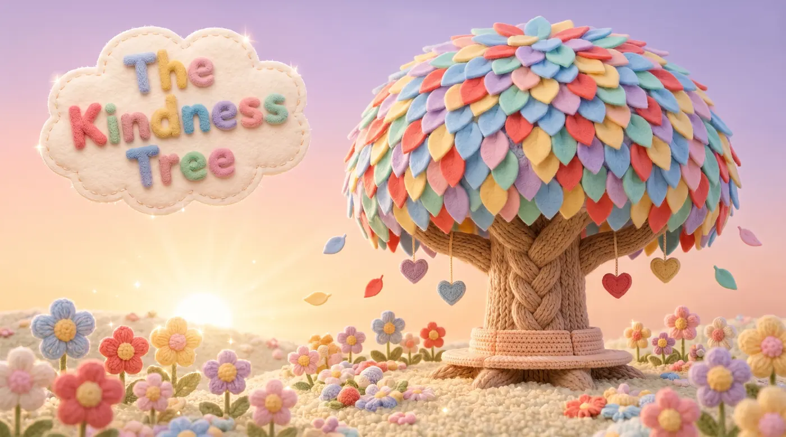
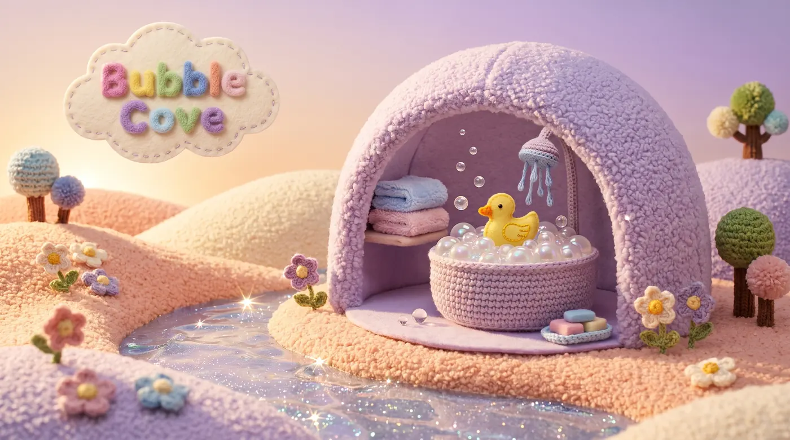
Not long ago, five tiny Pomeranian puppies were found together, scared and all alone. Kind rescuers scooped them up and promised they would be safe, and that they would never be split apart.
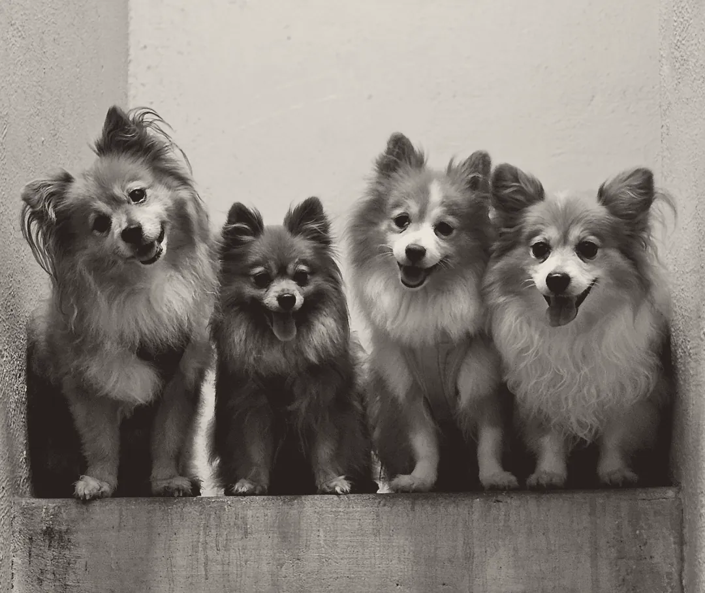
This is the true story of how those five little pups grew up as brothers and sisters, learned to feel, explore and grow, and found their way to a soft, hand-stitched world called the Pomverse.
Pom Tales is inspired by five real rescue Pomeranian siblings. Their true story of being rescued, fostered and finally finding a home is the heart of every single episode.
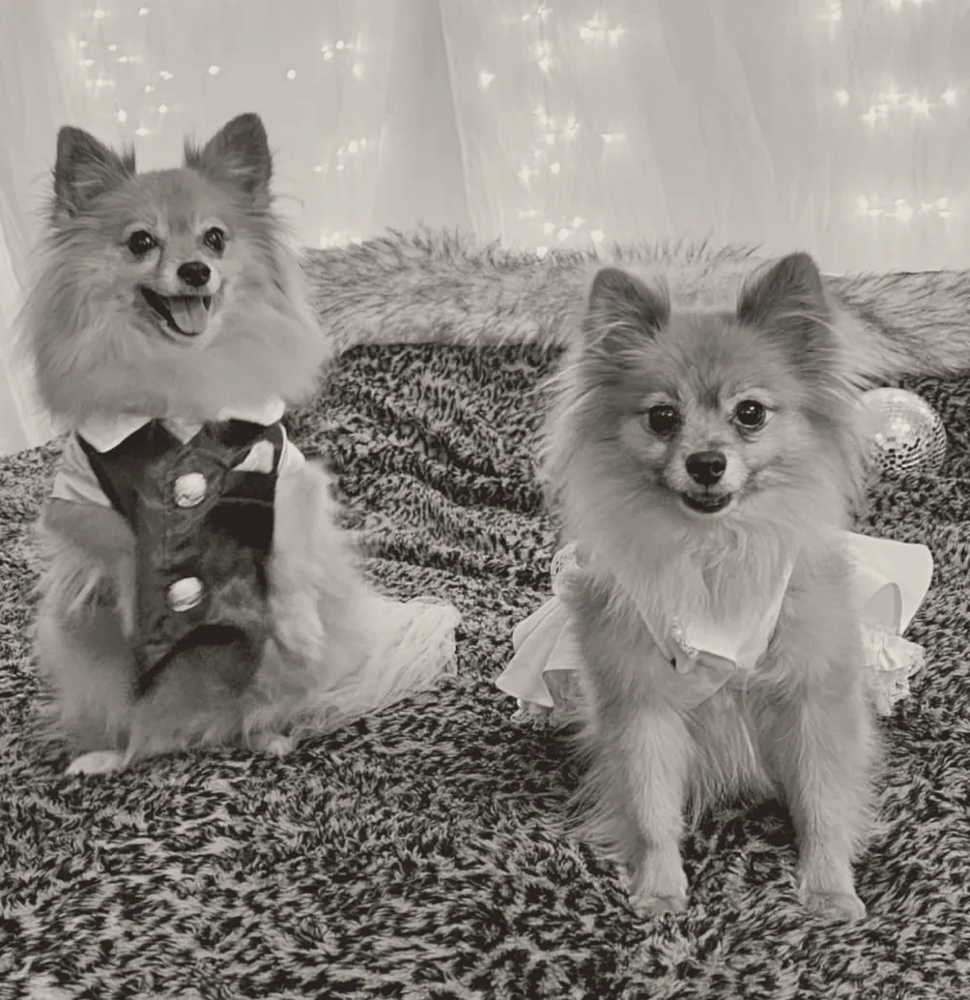
Through calming songs, bedtime stories and movement adventures, the pups help toddlers and preschoolers calm down, move, rest, imagine and grow, one soft little story at a time.
The pups live in a hand-stitched world of felt, knit and crochet. There is a Kindness Tree with glowing heart leaves, a Wiggle Field for jumping, a Bubble Cove for bath time, and Cuddle Hill for sleepy heads.
Every episode celebrates adoption and fostering, sibling love and kindness, and the joy of finding home. And every pup is drawn true to the real dog, right down to their markings.
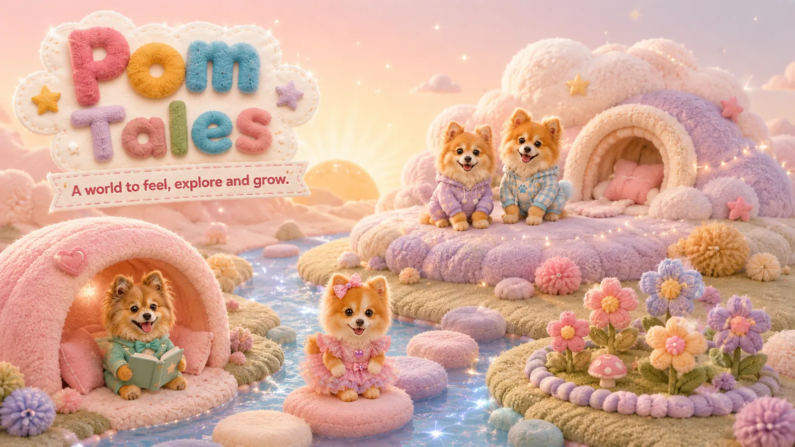
© 2026 Pom Tales. Gentle puppy stories for big little feelings.